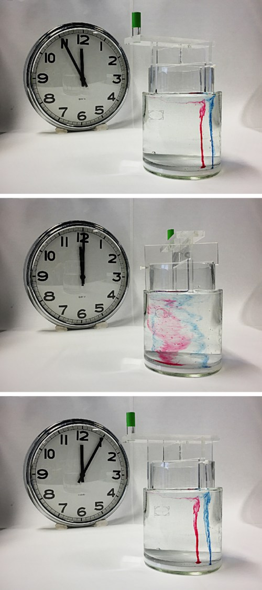

Difusión contra remolinos: por qué revolvemos
Echás azúcar en el café y, si no revolvés, el primer sorbo es amargo y el último es un jarabe. Con unas vueltas de cucharita, en segundos queda todo parejo. ¿Por qué tanta diferencia? Porque dejado solo, el azúcar se reparte por difusión, que es lentísima; al revolver, lo reparten los remolinos, que son muchísimo más rápidos.
Las moléculas de un líquido se mueven todo el tiempo, al azar. Por eso, una sustancia disuelta se va repartiendo sola desde donde está más concentrada: es la difusión. Pero según OpenStax es un proceso lento a escala macroscópica, porque en un líquido cada molécula choca enseguida con otra, que la puede mandar en cualquier dirección, incluso para atrás [1]. La distancia media que recorre crece solo con la raíz cuadrada del tiempo [1]:
OpenStax hace la cuenta para la glucosa en agua, con D = 6,7 × 10−10 m²/s: para recorrer apenas 1 cm, una molécula tarda en promedio unas 21 horas [1]. Y saca la conclusión que nos interesa: por eso revolvemos el azúcar en el agua en lugar de esperar a que se difunda [1]. Con la misma constante, recorrer los 4 cm de una taza llevaría casi dos semanas (un cálculo propio con la constante de la glucosa, la molécula que usa OpenStax de ejemplo).
Al revolver, uno no espera a que las moléculas viajen solas: mueve todo el líquido. La cucharita arma un flujo con remolinos que estiran y pliegan las zonas dulces y las amargas, una y otra vez. OpenStax describe la turbulencia justamente así: un flujo en el que las capas se mezclan con remolinos y torbellinos [2]. David Tong, de la Universidad de Cambridge, la describe con remolinos que se forman, se estiran y se rompen en remolinos más chicos [3].
Cada vez que un remolino estira una mancha de azúcar, la vuelve más delgada y más larga. Y la difusión, que es lenta para distancias grandes, es rápida para distancias chicas: como el tiempo crece con el cuadrado de la distancia, recorrer una décima de milímetro lleva unas diez mil veces menos que recorrer un centímetro (un cálculo propio con la fórmula de OpenStax). Los remolinos achican las distancias, y la difusión termina el trabajo en las escalas chicas.
El amasado: si ponés una gota de colorante en una masa y la dejás, el color tarda días en esparcirse. Si la amasás, la estirás y la doblás muchas veces, en un minuto la masa queda de un color parejo. Revolver el café es amasarlo: los remolinos estiran y doblan las manchas de azúcar hasta que son tan finas que el azúcar llega solo al resto del líquido.
Hay un caso curioso en el que revolver no sirve igual: los fluidos muy viscosos, como la miel o el jarabe de maíz, revueltos despacio. Tong cuenta que, a número de Reynolds muy bajo, el flujo es reversible: si se echa tinta en un fluido así, se revuelve y la tinta se mezcla, y después se revuelve en sentido contrario, la mezcla se deshace y la tinta vuelve a su lugar [3]. Sin inercia no hay remolinos que plieguen el fluido de manera irreversible. Por eso la mezcla eficiente necesita un flujo con inercia, con número de Reynolds suficientemente alto (un razonamiento a partir del ejemplo de Tong).

El calor también: el mismo argumento vale para la temperatura. El calor se difunde, igual que el azúcar, y también se reparte mucho más rápido cuando el fluido se mueve. Por eso la leche fría en un café caliente se entibia antes si revolvés (un razonamiento a partir de la difusión). Cómo se transporta el calor con el movimiento del fluido está en la convección de Rayleigh-Bénard.
Dejado solo, el azúcar se reparte por difusión, que en un centímetro tarda casi un día. Al revolver, los remolinos estiran y pliegan las manchas de azúcar hasta hacerlas tan finas que la difusión las termina de repartir en segundos. La turbulencia no reemplaza a la difusión: la ayuda achicando las distancias. Por eso revolvemos.
Pregunta para la comunidad: Según OpenStax, la constante de difusión crece con la temperatura [1]. ¿El azúcar se disuelve y se reparte más rápido en café caliente o en café frío, si no lo revolvés? ¿Y si lo revolvés, la diferencia importa tanto?